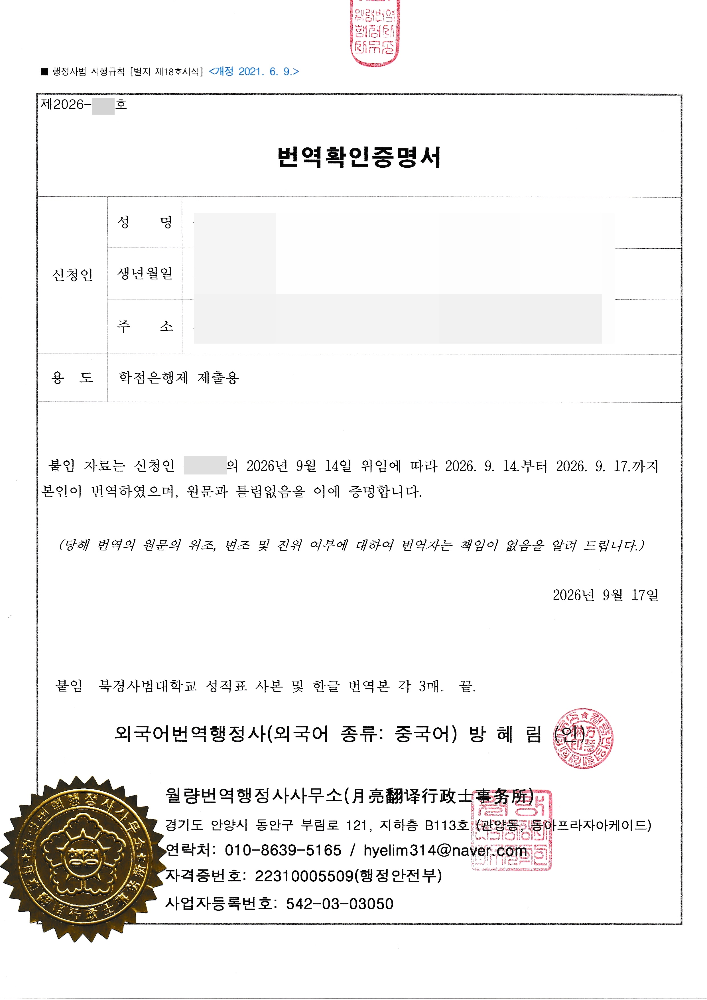
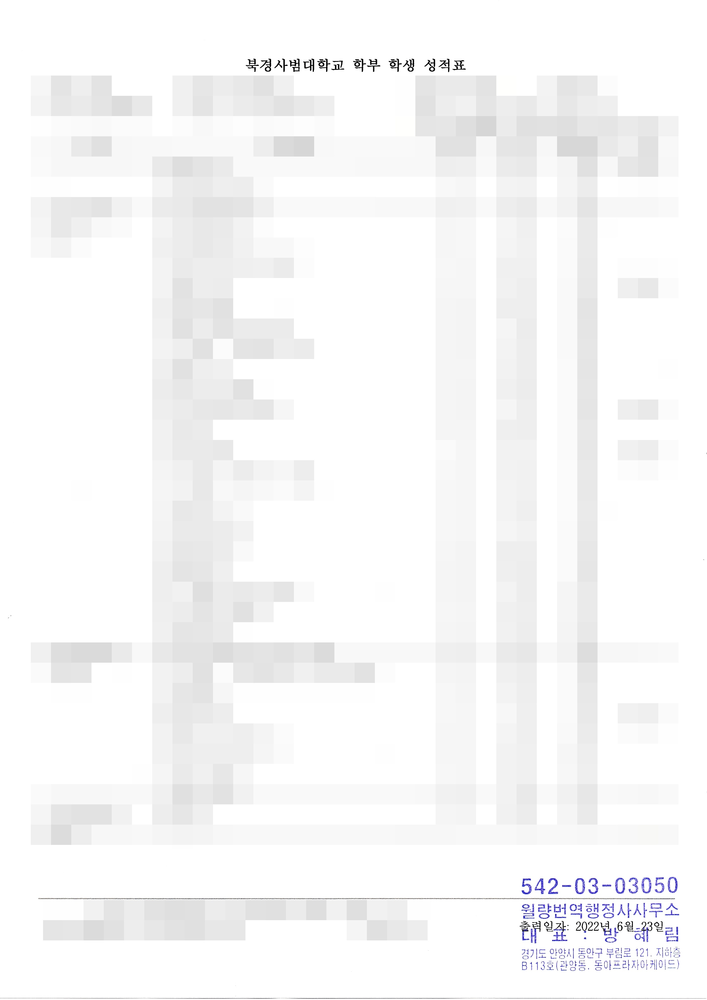
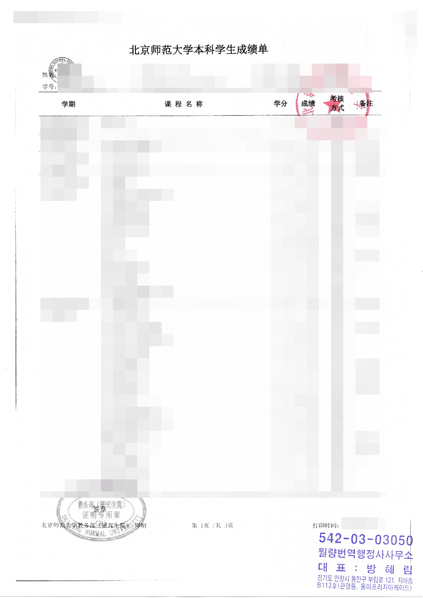

월량번역행정사사무소
월량번역행정사사무소
번역확인증명서 행정사법 근거
중국에서 발급된 중국어 서류를 국내 행정기관(공공기관 포함)에 제출하는 경우,
국가공인 외국어번역행정사가 직접 국문으로 번역하고
번역확인증명서를 발급합니다.
제출기관과 제출 목적을 확인하여
중국어 원문 검토부터 국문 번역, 번역확인증명서 발급까지 진행합니다.
제출할 중국어 서류의 내용을 확인한 후 직접 국문으로 번역하고, 번역문과 함께 제출할 번역확인증명서를 발급합니다. 제출기관에서 별도로 안내받은 번역 요건이 있다면 함께 확인합니다.
행정사법에 근거하여
발급합니다.
행정사법 제2조 제1항 제3호는 행정사의 업무로 ‘행정기관의 업무에 관련된 서류의 번역’을 규정하고 있습니다.
또한 행정사법 제20조 제2항에 따라 외국어번역행정사는 자신이 번역한 번역문에 대하여 번역확인증명서를 발급할 수 있습니다.
번역확인증명서는 행정사법 시행규칙 별지 제18호서식에 따라 발급합니다.
번역확인증명서란?
외국어번역행정사가 본인이 직접 번역한 번역문에 대하여 원문과 틀림없음을 확인하여 발급하는 증명서입니다.
국내 행정기관(공공기관 포함)에 제출할 중국어 서류를 확인합니다.
국가공인 외국어번역행정사가 중국어 원문을 직접 국문으로 번역합니다.
※ 제출기관마다 요구하는 번역 방식이 다를 수 있으므로, 의뢰 전 제출기관의 안내사항을 확인해 주세요.
번역확인증명서
실제 서류 예시
실제 번역확인증명서 발급 시 함께 구성되는 서류 예시입니다. 개인정보와 문서번호 등은 공개하지 않습니다.



어떤 서류를
진행하나요?
국내 행정기관(공공기관 포함)에 제출하는 다양한 중국어 서류의 국문 번역과 번역확인증명서 발급을 진행합니다.
졸업증서 · 학위증서 · 성적표 · 재학증명서 · 수료증 · 각종 자격증 등
친속관계서류 · 호구부 · 거민신분증 · 출생 관련 서류 등
친속관계공증서 · 출생공증서 · 혼인 관련 공증서 등 중국에서 발급된 각종 공증서
영업집조 · 기업등록 관련 서류 · 정관 · 계약서 · 회사 관련 증명서류 등
예금 계좌정보 · 거래내역 · 납세 관련 서류 · 재무 및 거래 관련 자료 등
국내 행정기관 및 공공기관 제출을 위해 국문 번역이 필요한 각종 중국어 서류
의뢰 전
확인해 주세요.
제출기관에 따라 번역확인증명서, 번역공증 등 요구하는 방식이 다를 수 있습니다.
성명과 생년월일뿐 아니라 발급기관, 직인, 문서번호 등 번역에 필요한 내용을 확인할 수 있도록 전체 서류를 보내주세요.
국내에서 사용하고 있는 한글 성명이나 기존 번역서류가 있다면 함께 보내주시면 서류 간 표기를 확인하는 데 도움이 됩니다.
번역확인증명서가 필요한지 번역공증이 필요한지 명확하지 않은 경우, 제출기관에서 받은 안내문이나 제출서류 목록을 함께 보내주시면 확인 후 진행 방법을 안내해 드립니다.
번역확인증명서 상담,
편한 방법으로 문의해 주세요.
중국어 원문을 촬영하거나 스캔하여 보내주시면 서류와 제출 목적을 확인한 후 진행 방법을 안내해 드립니다.
상담방법 및 연락처 확인 →